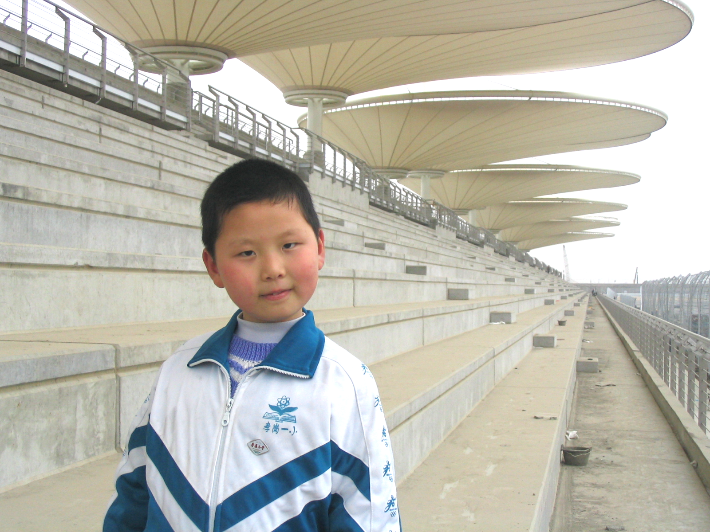

Robbie Li, He/Him
UX Researcher based in Boston
Curious Baby 👶 Loyal Teammate 🏅Process Guy 📝

- Curious baby is my researcher's mantra: I aim to bring a baby-like curiosity and a beginner’s mindset to every project I'm a part of.
- Loyal teammate is my operating principle for collaboration: people are the most important and precious gift, in or outside of work; there's always have time for people.
- Process guy is an observation of my work approach: I always have my eyes open for opportunities to improve how we do things and build creativity, agency, trust, and visibility into the system.
Planning and leading both qualitative and quantitative user research, running quantitative business analysis in R and Python to guide sales strategy, turning around rapid Figma prototypes and facilitating brainstorm sessions and design crits, defining and executing marketing & PR strategy for early-stage startups, developing web-based and iOS applications - My multi-disciplinary background and cross-industry experiences give me fluency in research, data, design, marketing, product and engineering, allowing me to productively and dynamically collaborate with various functional teams.
I have built my career across multiple early-stage startups, which helps me balance bias towards action and focus on process with organizational improvements, ultimately working with efficiency, creativity, and consistency.
Currently interested in leveraging technology to catalyze individual economic empowerment and cultural transformation.